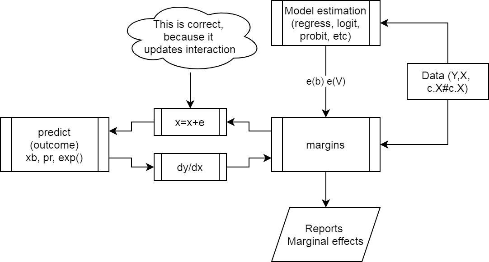
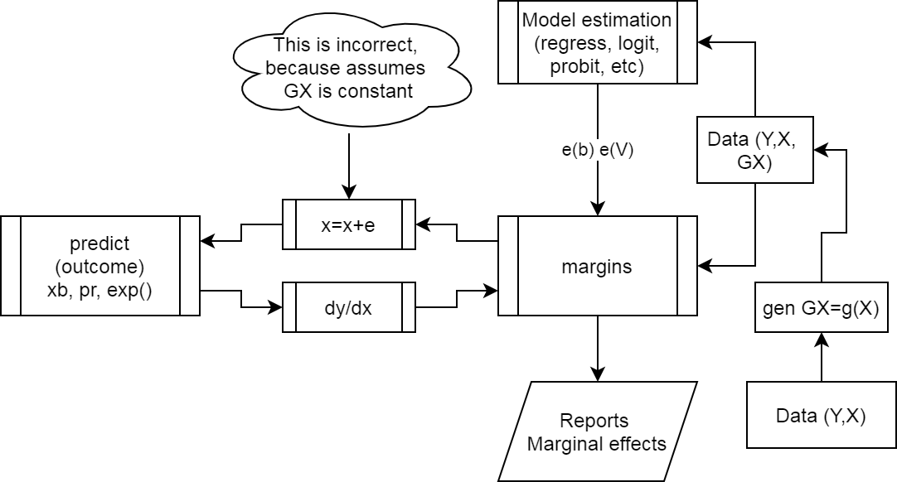
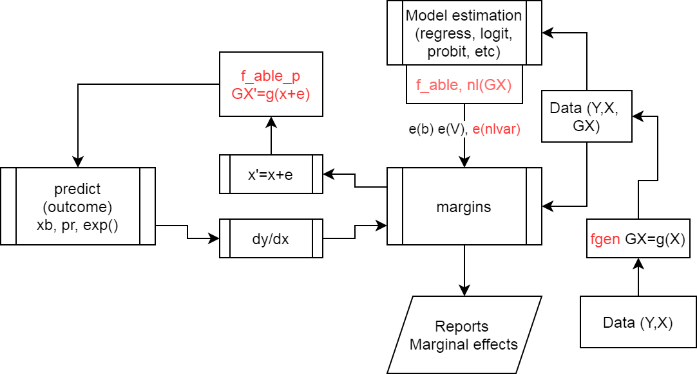
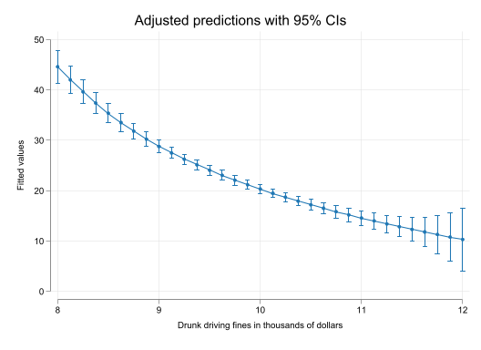
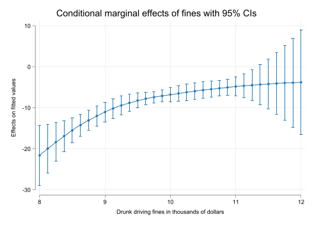

clear
set linesize 255
set seed 1
set obs 1000 // Create a sample of 100 obs
gen x1 = runiform(0,4) // Create two variables with mean 2
gen x2 = runiform(0,4) //
// create auxiliary variables
gen x1x2=x1*x2
gen x2sqr=x2^2
// and set up the coefficient values
scalar b0 = 2
scalar b1 = 1
scalar b2 = 1
scalar b3 = 1
scalar b4 = 1
gen y = b0 + b1 * x1 + b2 * x2 + b3 * x1x2 + b4 * x2sqr + rnormal()Marginal effects with nonlinear transformations: f_able
Featuring Rios-Avila (2021)
Introduction
Note
If you are interested only on the program f_able, please jump to the last section
In both classroom discussions and online forums like statalist, a recurring question revolves around the estimation of marginal effects within models that incorporate nonlinear transformations of key variables.
This question is challenging because we, the analalists, are more familiar with model specifications that exclusively involve variables in their original forms. Few of us dare to explore the inclusion of quadratic or cubic terms, or the introduction of interactions among continuous variables. In the past, calculating marginal effects under such circumstances required additional effort: computing partial derivatives, and obtaining both point estimates and standard errors.
For linear models, things are simple, as marginal effects are constant and equal to their coefficients. Even in non-linear models, where the effect varies based on characteristics, estimating marginal effects remains relatively easy, either manually or with the help of most software tools.
Starting from version 14, Stata is able to compute marginal effects when interactions and polynomials are present, using the margins command, as long as the formulations are expressed in a manner that Stata can understand. Virtually all official commands, as well as numerous community-contributed ones, offer this functionality. However, when dealing with more complex transformations, like fractional polynomials or spline bases, manual derivation of these effects are still necessary.
But surely, there’s a more efficient way!
In Rios-Avila (2021), I introduced a user-friendly command designed to simplify the estimation of marginal effects, regardless of the specific functional forms applied to the data, that can be used with most commands. In the following sections, I’ll provide an overview of the correct approach to estimating marginal effects, describe how the margins command operates, and explain how you can employ f_able to calculate marginal effects for models that might otherwise pose challenges.
Marginal effects: Analytical approach
Lets start with a simple linear model:
\[\begin{aligned} y &=\beta_0+\beta_1 x_1 + \beta_2 x_2 + \beta_3 x_3 + e \\ E(y|x) &= \beta_0+\beta_1 x_1 + \beta_2 x_2 + \beta_3 x_3 \end{aligned} \tag{1}\]
In this model, marginal effects are directly given by the model coefficients:
\[\frac{\partial E(y|x)}{\partial x_k} = \beta_k \]
Which greatly simplifies the analysis.
If the model has interactions or polynomials, marginal effects are somewhat more challenging:
\[\begin{aligned} E(y|x) = \beta_0+\beta_1 x_1 + \beta_2 x_2 + \beta_3 x_1 \times x_2 + \beta_4 x_2^2 \end{aligned} \tag{2}\]
where the marginal effects would be given by:
\[\begin{aligned} \frac{\partial E(y|x)}{\partial x_1} &= \beta_1 + \beta_3 x_2 \\ \frac{\partial E(y|x)}{\partial x_2} &= \beta_2 + \beta_3 x_1 + 2 \beta_4 x_2 \end{aligned} \]
These effects are not constant. They vary based on values of \(x_1\) and \(x_2\). Knowing some calculus, however, its rather straight forward to determine the marginal effects, and apply that to our work.
So lets see an example of this. First the setup:
Now, we can estimate the model and obtain marginal effects based on the analytical solution:
qui:reg y x1 x2 x1x2 x2sqrwhich gives us the following
$$ E(y|X) = 1.953 + 1.046 x1 + 0.944 x2 + 1.019 x1x2 + 1.005 x2sqr
N = 1000 R^2 = 0.989 $$
From where we can estimate marginal effects using the analytical formulas we derived.
margins, expression(_b[x2]+_b[x1x2]*x1+2*_b[x2sqr]*x2)warning: option expression() does not contain option predict() or xb().
Predictive margins Number of obs = 1,000
Model VCE: OLS
Expression: _b[x2]+_b[x1x2]*x1+2*_b[x2sqr]*x2
------------------------------------------------------------------------------
| Delta-method
| Margin std. err. z P>|z| [95% conf. interval]
-------------+----------------------------------------------------------------
_cons | 7.131659 .0265967 268.14 0.000 7.07953 7.183787
------------------------------------------------------------------------------Noticed I used margins expression, to allow me estimate average marginal effects using the analytical solutions. Technically, what we see is the average prediction of the expression we provided. We, of course, know they are right, because we know calculus.
You could use a similar approach to estimate marginal effects based on any transformation (as long as you know the how to obtain the partial derivative)
Marginal effects: margins
As mentioned earlier, Stata command margins allows you to estimate marginal effects of almost any model, as long as it understands the inter-relationships among variables. So lets see what would have happend if I use it in my previous model:
margins, dydx(x1 x2)
Average marginal effects Number of obs = 1,000
Model VCE: OLS
Expression: Linear prediction, predict()
dy/dx wrt: x1 x2
------------------------------------------------------------------------------
| Delta-method
| dy/dx std. err. t P>|t| [95% conf. interval]
-------------+----------------------------------------------------------------
x1 | 1.045827 .0563175 18.57 0.000 .9353127 1.156342
x2 | .9437094 .1142363 8.26 0.000 .7195376 1.167881
------------------------------------------------------------------------------We get something that is wrong. Instead of estimating the correct marginal effects, it is only showing the coefficients for \(x_1\) and \(x_2\). The reason for this is that margins has no way to know that the variables \(x1x2\) and \(x2sqr\) are in fact functions of \(x_1\) and \(x_2\). Not at least we use the correct syntax.
In Stata, interactions and polynomials can be added to the model specification using “#”, and indicating the type of variable one is using. In this case, I use “c.” because \(x_1\) and \(x_2\) are continuous variables. See help fvvarlist, for more information.
qui:reg y c.x1 c.x2 c.x1#c.x2 c.x2#c.x2
margins, dydx(x1 x2)
Average marginal effects Number of obs = 1,000
Model VCE: OLS
Expression: Linear prediction, predict()
dy/dx wrt: x1 x2
------------------------------------------------------------------------------
| Delta-method
| dy/dx std. err. t P>|t| [95% conf. interval]
-------------+----------------------------------------------------------------
x1 | 3.128384 .0283469 110.36 0.000 3.072757 3.18401
x2 | 7.131659 .0265967 268.14 0.000 7.079467 7.183851
------------------------------------------------------------------------------Now we get the same result as earlier because Stata understands that \(x_2^2\) or c.x2#c.x2 is a new variable that depends on \(x_2\). Similar for \(x_1\).
The key, then, is to teach Stata that certain variables are indeed function of others. Here is where f_able enters into play.
How does margins work? and why f_able?
Figure 1 provies an sketch of how margins work when estimating a model.
- Get the data, with correct model specifications.
- Estimate the model, which creates the
e(b)ande(V), which contains all the data necessairy to estimate the marginal effects. marginsmakes a small change in \(x's\) to obtain numerical derivatives.- Calls on
predictto get the predicted values of interest - Calculates marginal effects, and reports them.

margins work?
The problem with using data that we create before the model has to do with step 3.
The change induced on \(x\) will not be reflected in \(GX\), because there is nothing to tie them together.

margins fails?
Figure 3 shows how f_able helps solving this problems.
- When creating the data with
fgen, additional information will be added to show how that data was generated. - After estimating the model,
f_ablewill add information to thee()so it nows what variables depend on others (those created withfgen). - Finally,
f_able_pacts as an intermediary to update all “created variables” during the numerical differentiation process.

f_able helps?
Using f_able to estimate margins for any transformation.
Setup
You can download f_able from SSC. However, the latest version will be avaible from my repository. To do so, type:
* Opt 1. Get Fra installer
net install fra, replace from(https://friosavila.github.io/stpackages)
fra install f_able, replace
* Opt 2. Install it from here directly
net install f_able, replace from(https://friosavila.github.io/stpackages)
* Opt 3. Use SSC
ssc install f_ableRe-doing the example
So, lets retake the previous example. We know that the “offending” variables were x1x2 and x2sqr. So lets recreate them using fgen.
drop x1x2 x2sqr
fgen x1x2 = x1*x2
fgen x2sqr = x2*x2Now, lets estimate the model of interest, but adding a line indicating what variables are “created” variables:
qui:reg y x1 x2 x1x2 x2sqr
** This line is necessary
f_able x1x2 x2sqr, auto
** option Auto, makes some of the processing easierThis is an experimental feature in f_able
Using this option, you do not need to add nochain or numerical options in margins
All variables in -nlvar- have been declaredFinally, lets estimate the marginal effects again
margins, dydx(*)
Average marginal effects Number of obs = 1,000
Model VCE: OLS
Expression: Fitted values, predict()
dy/dx wrt: x1 x2
------------------------------------------------------------------------------
| Delta-method
| dy/dx std. err. z P>|z| [95% conf. interval]
-------------+----------------------------------------------------------------
x1 | 3.128384 .0283469 110.36 0.000 3.072825 3.183942
x2 | 7.131659 .0265967 268.14 0.000 7.07953 7.183787
------------------------------------------------------------------------------What if \(x\) is no longer in the main model
There are a few other cases that may be of interest. Consider the previous model, and assume we are only interested in adding the quadratic term in the model, not the linear one.
Using factor notation, one could do the following:
qui:reg y c.x2#c.x2
margins, dydx(*)
Average marginal effects Number of obs = 1,000
Model VCE: OLS
Expression: Linear prediction, predict()
dy/dx wrt: x2
------------------------------------------------------------------------------
| Delta-method
| dy/dx std. err. t P>|t| [95% conf. interval]
-------------+----------------------------------------------------------------
x2 | 7.1484 .103735 68.91 0.000 6.944836 7.351963
------------------------------------------------------------------------------Using f_able, however, you still need to include the original variable in the model. This can be done using the “o.” prefix, so that the variable is ommitted, from calculations, but remain in the model.
qui:reg y x2sqr o.x2
f_able x2sqr, auto
margins, dydx(*)This is an experimental feature in f_able
Using this option, you do not need to add nochain or numerical options in margins
All variables in -nlvar- have been declared
Average marginal effects Number of obs = 1,000
Model VCE: OLS
Expression: Fitted values, predict()
dy/dx wrt: x2
------------------------------------------------------------------------------
| Delta-method
| dy/dx std. err. z P>|z| [95% conf. interval]
-------------+----------------------------------------------------------------
x2 | 7.1484 .103735 68.91 0.000 6.945083 7.351717
------------------------------------------------------------------------------Alright, these are very simple examples that you could already do with margins. So lets try something different. Estimate a model using \(x\) and \(\sqrt x\) as explanatory variables:
fgen rx1=x1^.5
qui:reg y x1 rx1
f_able rx1, auto
margins, dydx(*)This is an experimental feature in f_able
Using this option, you do not need to add nochain or numerical options in margins
All variables in -nlvar- have been declared
Average marginal effects Number of obs = 1,000
Model VCE: OLS
Expression: Fitted values, predict()
dy/dx wrt: x1
------------------------------------------------------------------------------
| Delta-method
| dy/dx std. err. z P>|z| [95% conf. interval]
-------------+----------------------------------------------------------------
x1 | 3.332656 .3268743 10.20 0.000 2.691994 3.973318
------------------------------------------------------------------------------How do we know is correct? We can replicate the results using nl!. Technically, it works in a similar way as f_able does.
qui:nl (y={b0}+{b1}*x1+{b2}*x1^0.5), variable(x1)
margins, dydx(*)
Average marginal effects Number of obs = 1,000
Model VCE: GNR
Expression: Fitted values, predict()
dy/dx wrt: x1
------------------------------------------------------------------------------
| Delta-method
| dy/dx std. err. z P>|z| [95% conf. interval]
-------------+----------------------------------------------------------------
x1 | 3.332656 .3268743 10.20 0.000 2.691994 3.973318
------------------------------------------------------------------------------Something even harder? What about a poisson regression:
qui:poisson y x1 x2 x1x2 x2sqr
qui:f_able x1x2 x2sqr, auto
margins, dydx(*)
Average marginal effects Number of obs = 1,000
Model VCE: OIM
Expression: Predicted number of events, predict()
dy/dx wrt: x1 x2
------------------------------------------------------------------------------
| Delta-method
| dy/dx std. err. z P>|z| [95% conf. interval]
-------------+----------------------------------------------------------------
x1 | 3.168351 .1185385 26.73 0.000 2.93602 3.400683
x2 | 7.004783 .1513991 46.27 0.000 6.708046 7.30152
------------------------------------------------------------------------------Another implementation some people usually ask for is the estimation of marginal effects when using splines, either regular polynomial splines, or restricted cubic splines.
Because splines are messy to code, instead of using fgen, we can use f_spline or f_rcspline. Let’s use both:
webuse dui, clear
* model citation=f(fines)+e
* Cubic polynomial spline with 1 knot
f_spline spfine=fines, degree(3) nknots(1)
* Restricted Cubic polynomial with 5 knots
f_rcspline cspfine=fines, nknots(5) replace
* Different from other commands,
* f_spline and f_rcspline use
* the original variable as part of the splines(Fictional data on monthly drunk driving citations)Now lets estimate both models:
qui:reg citations fines spfine2 spfine3 spfine4
qui:f_able spfine2 spfine3 spfine4, auto
qui:emargins , dydx(fines) estore(m1)
qui:reg citations fines cspfine2 cspfine3 cspfine4
qui:f_able cspfine2 cspfine3 cspfine4, auto
qui:emargins , dydx(fines) estore(m2)
qui:reg citations fines
qui:emargins , dydx(fines) estore(m3)
display "#### Contrasting Models"
esttab m1 m2 m3, nonum mtitle("Cubic Spline" "RCubic Spline" "LM") md se note("Contrasting effects")Contrasting Models
| Cubic Spline | RCubic Spline | LM | |
|---|---|---|---|
| fines | -7.911*** | -7.965*** | -7.960*** |
| (0.424) | (0.422) | (0.434) | |
| N | 500 | 500 | 500 |
Contrasting effects
* p < 0.05, ** p < 0.01, *** p < 0.001
Of course, when using splines, it may be far more interesting plotting the effects across values of \(fines\).
set scheme white2
color_style tableau
qui:reg citations fines spfine2 spfine3 spfine4
qui:f_able spfine2 spfine3 spfine4, auto
qui:emargins , at(fines=(8(0.125)12))
qui:marginsplot, name(m1, replace)
qui:emargins , dydx(fines) at(fines=(8(0.125)12))
qui:marginsplot, name(m2, replace)


Conclusions
f_able is a relatively simple program that allows you to estimate marginal effects of unconventional variable transformations.
While I have tried to make f_able as flexible as possible, couple of challenges remain.
f_ablerelies on numerical differentiation, which can be very time consuming in some models.- When the model is fairly complex, think about interactions of splines and other variables, margins may have problems producing results, because the model itself may fail to fullfill certain estimation criterias. When that happens, one option is to add
noestimcheckand/orforceoption. - Some models rely on analytical solutions based on the chainrule. While this may not be a problem in the latest
f_ableupdate (auto option), it could still linger for some models. When this happens, try optionnochainrule. - Some times, no results will be shown because the variance covariance matrix is not symetric. This happens because of the small discrepancies produced by the numerical differentiation. If something like that appears, there are two utilities
f_symevandf_symrv, that will fix it before you produce the necessary results again.
Hope you find it useful.
References
Rios-Avila, Fernando. 2021. “Estimation of Marginal Effects for Models with Alternative Variable Transformations.” The Stata Journal 21 (1): 81–96. https://doi.org/10.1177/1536867X211000005.